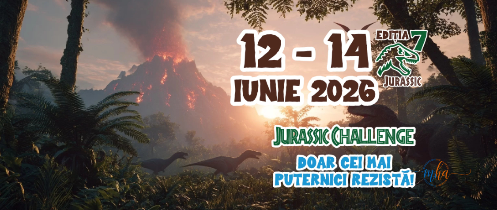

Între 12 și 14 iunie 2026, zona Podari, de pe malul Jiului, devine scena unei aventuri spectaculoase, inspirate din Era Jurassic. Cea de-a șaptea ediție a festivalului Pedală în Bănie propune un concept inedit care îmbină sportul, natura și distracția pentru întreaga familie, sub tema „Jurassic Challenge — Doar cei mai puternici rezistă".
Participanții vor descoperi decoruri tematice, zone interactive, un dinozaur animatronic și numeroase activități dedicate atât copiilor, cât și adulților. Programul include competiții de MTB și Trail Run, proiecții de film în aer liber, concerte și zone de relaxare pe malul Jiului.
🦕 Pedală în Bănie 2026 — date esențiale
| Ediție | A 7-a ediție a festivalului |
| Perioada | 12–14 iunie 2026 |
| Locație | Podari, malul Jiului, Oltenia |
| Competiții | MTB și Trail Run |
| Premii totale | Peste 15.000 de euro |
| Termen înscrieri | Miercuri, 10 iunie 2026, ora 18:00 |
| Trasee disponibile | Pentru sportivi experimentați și copii |
| Acces | Sportivi amatori, profesioniști, familii |
Înscrieri deschise până miercuri, 10 iunie, ora 18:00
Înscrierile online pentru cursele MTB și Trail Run sunt deschise până miercuri, 10 iunie, la ora 18:00. Concurenții pot alege între mai multe trasee, dedicate atât sportivilor experimentați, cât și celor mai tineri participanți.
Premii de peste 15.000 de euro și surprize pentru toți participanții
Ediția din acest an pune la bătaie premii totale de peste 15.000 de euro, la care se adaugă tombole și surprize organizate pe parcursul întregului weekend. Evenimentul se adresează sportivilor amatori și profesioniști, dar și familiilor și tuturor celor care își doresc un weekend activ în natură, într-un cadru natural spectaculos de pe malul Jiului.

Afișul oficial al ediției 2026 — „Jurassic Challenge" | Foto: organizatori
Program complet și detalii despre înscriere, pe site-ul oficial
Programul complet al evenimentului și detaliile despre modalitățile de înscriere sunt disponibile pe site-ul oficial al festivalului Pedală în Bănie. Organizatorii recomandă înscrierea cât mai rapidă, dat fiind că termenul expiră mâine, 10 iunie, la ora 18:00.
Pedală în Bănie a ajuns, la ediția a șaptea, unul dintre cele mai așteptate evenimente outdoor din regiune, reunind an de an sute de sportivi și familii în jurul pasiunii pentru mișcare, natură și distracție în aer liber.